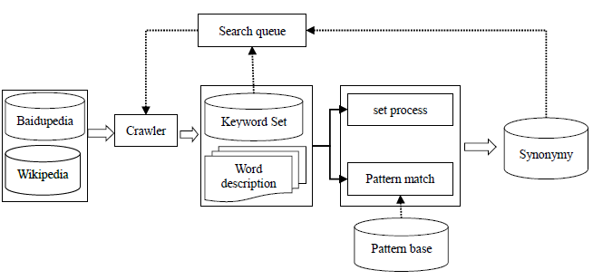
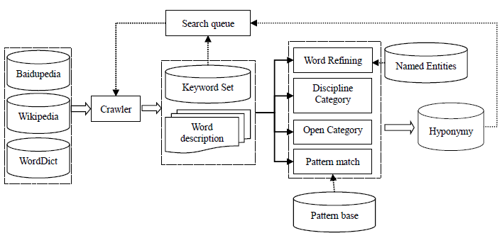

Description: The problem of automatic acquisition of Lexical Semantic Relationship is important and common. This system tackles the problem by proposing a scheme on automatic acquisition on synonymy and hyponymy based on web resources. The system performs well in the tasks of lexical semantic relationship extraction in NLP&CC2012.


Refer to the system report (pdf)